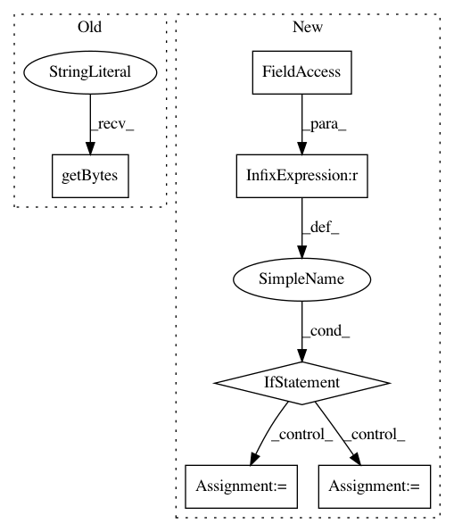

1a1dfa66218f6c6aabe3048d292a275c672da395,PyInstaller/lib/modulegraph/modulegraph.py,,_code_to_file,#Any#,207
Before Change
def _code_to_file(co):
Convert code object to a .pyc pseudo-file
return BytesIO(
imp.get_magic() + b"\0\0\0\0" + marshal.dumps(co))
def moduleInfoForPath(path):
for (ext, readmode, typ) in imp.get_suffixes():
After Change
def _code_to_file(co):
Convert code object to a .pyc pseudo-file
if sys.version_info >= (3, 4):
header = imp.get_magic() + (b"\0" * 8)
else:
header = imp.get_magic() + (b"\0" * 4)
return BytesIO(header + marshal.dumps(co))
def moduleInfoForPath(path):
for (ext, readmode, typ) in imp.get_suffixes():
In pattern: SUPERPATTERN
Frequency: 3
Non-data size: 6
Instances
Project Name: pyinstaller/pyinstaller
Commit Name: 1a1dfa66218f6c6aabe3048d292a275c672da395
Time: 2018-10-19
Author: ronaldoussoren@mac.com
File Name: PyInstaller/lib/modulegraph/modulegraph.py
Class Name:
Method Name: _code_to_file
Project Name: NervanaSystems/nlp-architect
Commit Name: 24d3656c6c4b3c6806954487720d53af775a1150
Time: 2018-06-07
Author: shira.guskin@intel.com
File Name: set_expansion_demo/ui/main.py
Class Name:
Method Name: get_phrases
Project Name: home-assistant/home-assistant
Commit Name: 8d34b76d510c64eaf1fea257260d11ec5a206478
Time: 2016-05-17
Author: brian.lenihan@gmail.com
File Name: homeassistant/components/device_tracker/asuswrt.py
Class Name: AsusWrtDeviceScanner
Method Name: get_asuswrt_data